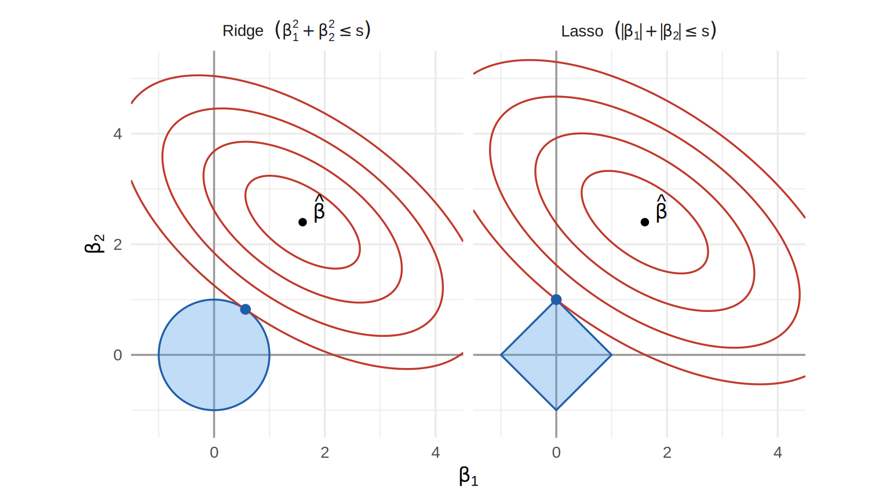
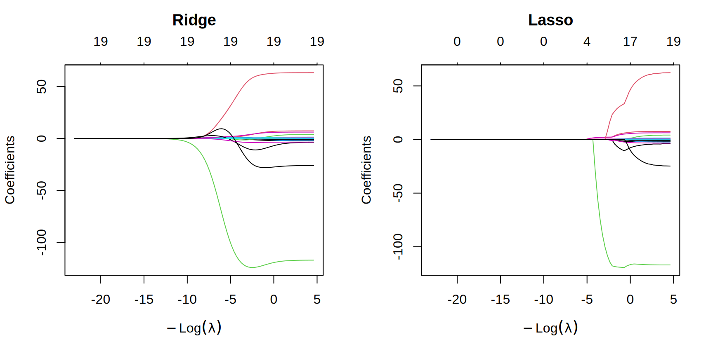
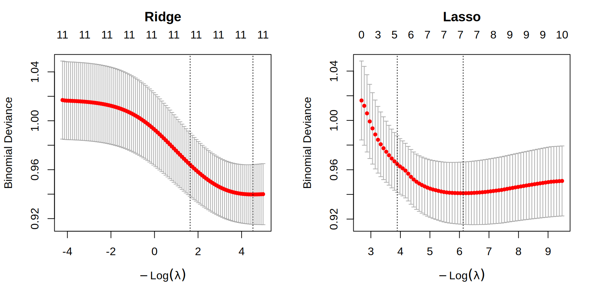

Ce chapitre porte sur la régression régularisée (ridge et lasso). Cette approche ajoute une pénalité au critère d’ajustement pour réduire la variance des estimateurs, au prix d’un biais. Le chapitre commence par un rappel des outils de sélection de variables déjà vus, traite ensuite le cas linéaire, puis étend la méthode à la régression logistique.
6.1 Sélection de variables : rappel
Deux familles d’outils pour choisir les variables d’un modèle ont été vues jusqu’ici :
les tests pour modèles emboîtés : test \(F\) en régression linéaire, différence de déviances pour les GLM ;
les critères d’information \(AIC\) et \(BIC\), qu’on combine aux procédures pas à pas forward, backward et stepwise. Ils servent pour des modèles non emboîtés, ou quand le nombre de sous-modèles (\(2^p\)) est trop grand pour une recherche exhaustive.
La régression régularisée est une troisième approche, qui fait l’estimation et, dans le cas du lasso, la sélection de variables en même temps.
6.2 Régression régularisée
Considérons le modèle de régression \[Y_i = \beta_0 + \beta_1 x_{i1} + \cdots + \beta_p x_{ip} + \epsilon_i, \qquad \epsilon_i \sim \mathcal{N}(0,\sigma^2).\] L’estimateur des moindres carrés \(\hb\) est sans biais et, sous normalité des erreurs, de variance minimale parmi les estimateurs sans biais, mais rien ne garantit qu’il a la plus petite erreur quadratique moyenne : \[E\left[(\beta_j - \hat\beta_j)^2\right] = \mbox{biais}(\hat\beta_j)^2 + Var[\hat\beta_j].\]
La régression régularisée ajoute une pénalité au critère des moindres carrés : on minimise \[Q_\lambda(\boldsymbol\beta) = Q(\boldsymbol\beta) + \lambda\, P(\beta_1,\ldots,\beta_p),\] où \(Q(\boldsymbol\beta) = \sum_{i=1}^n\{Y_i - (\beta_0 + \beta_1 x_{i1} + \cdots + \beta_p x_{ip})\}^2\) est la somme des carrés résiduels, \(P\) est une fonction de pénalité connue et \(\lambda \geq 0\) est le coefficient de pénalité. La pénalité réduit la variance des estimateurs, mais au prix d’un biais. Avec un bon choix de \(P\) et de \(\lambda\), l’erreur quadratique moyenne diminue, ce qui rend les prédictions plus précises. C’est le compromis biais-variance.
Remarque
L’ordonnée à l’origine \(\beta_0\) n’est pas pénalisée. En général, les variables explicatives sont standardisées avant l’ajustement, parce que la pénalité dépend de leur échelle. Par exemple, une variable mesurée en mètres plutôt qu’en kilomètres a un coefficient divisé par 1000, ce qui change sa pénalité.
Exemple — Jeu de données Hitters
Ces données décrivent les joueurs des ligues majeures de baseball. Elles viennent de la librairie ISLR (la librairie ISLR2 de la deuxième édition de James et al. (2021) contient le même jeu), qui les a tirées de la collection StatLib de l’université Carnegie Mellon. À l’origine, elles ont été préparées pour une séance d’affiches de la section Statistical Graphics de l’American Statistical Association en 1988. Le jeu compte 322 joueurs et 20 variables, dont la réponse Salary, le salaire annuel au jour d’ouverture de la saison 1987, en milliers de dollars. Les 19 variables explicatives forment quatre groupes :
statistiques offensives de la saison 1986 : présences au bâton (AtBat), coups sûrs (Hits), circuits (HmRun), points marqués (Runs), points produits (RBI) et buts sur balles (Walks) ;
statistiques offensives cumulées sur la carrière : CAtBat, CHits, CHmRun, CRuns, CRBI et CWalks, plus le nombre d’années dans les ligues majeures (Years) ;
statistiques défensives de la saison 1986 : retraits (PutOuts), assistances (Assists) et erreurs (Errors) ;
variables catégorielles à deux modalités : la ligue à la fin de 1986 (League, A pour américaine ou N pour nationale), la division à la fin de 1986 (Division, E pour est ou W pour ouest) et la ligue au début de 1987 (NewLeague).
Comme le salaire est manquant pour 59 joueurs, on retire ces joueurs, ce qui laisse \(n = 263\) observations. La fonction model.matrix transforme les trois variables catégorielles en indicatrices (LeagueN, DivisionW et NewLeagueN), d’où une matrice x à 19 colonnes. Cette matrice ne contient pas la colonne de 1 : glmnet ajoute lui-même l’ordonnée à l’origine.
Deux choses sont à retenir pour la suite. D’abord, les variables de carrière sont fortement corrélées entre elles, parce qu’elles croissent toutes avec l’ancienneté du joueur. Cette colinéarité gonfle la variance des estimateurs des moindres carrés, ce qui est justement la situation où la régularisation est utile. Ensuite, la distribution du salaire est asymétrique à droite : la moyenne dépasse nettement la médiane.
Remarque
À cause de cette asymétrie, on modélise souvent \(\log(\texttt{Salary})\) plutôt que Salary. Je garde ici le salaire sur son échelle d’origine, comme dans James et al. (2021), de sorte que les erreurs test des exemples sont comparables à celles de cet ouvrage.
6.2.1 Régression ridge
La régression ridge minimise \[Q^{(R)}_\lambda(\boldsymbol\beta) = \sum_{i=1}^n\left\{Y_i - (\beta_0 + \beta_1 x_{i1} + \cdots + \beta_p x_{ip})\right\}^2 + \lambda\sum_{j=1}^p\beta_j^2.\] En écriture matricielle, avec la matrice de design \(\boldsymbol X\) de dimension \(n\times(p+1)\) dont la première colonne est formée de 1, \(Q^{(R)}_\lambda(\boldsymbol\beta) = (\boldsymbol Y - \boldsymbol X\boldsymbol\beta)^\top(\boldsymbol Y-\boldsymbol X\boldsymbol\beta) + \lambda\,\boldsymbol\beta^\top\tilde{\boldsymbol I}_{p+1}\,\boldsymbol\beta\), où \(\tilde{\boldsymbol I}_{p+1} = \mathrm{diag}(0,1,\ldots,1)\) est la matrice diagonale de taille \(p+1\) qui a des 1 sur la diagonale, sauf un 0 en première position puisque \(\beta_0\) n’est pas pénalisé. La solution est explicite : \[\boxed{\hb^{(R)}_\lambda = (\boldsymbol X^\top \boldsymbol X + \lambda\tilde{\boldsymbol I}_{p+1})^{-1}\boldsymbol X^\top \boldsymbol Y}\] dont découlent l’espérance et la variance :
L’estimateur est donc biaisé dès que \(\lambda > 0\) (sauf dans le cas trivial où \(\beta_1 = \cdots = \beta_p = 0\)). Quand \(\lambda = 0\), on retrouve l’estimateur des moindres carrés : \(\hb^{(R)}_\lambda = \hb\). À l’autre extrême, quand \(\lambda\to\infty\), tous les \(\hat\beta^{(R)}_{j,\lambda}\) (\(j\geq1\)) tendent vers 0 et l’ordonnée à l’origine tend vers \(\bar Y\). Ce phénomène s’appelle le rétrécissement (shrinkage).
On ajuste la régression ridge avec glmnet(x, y, alpha = 0) sur une grille de 100 valeurs de \(\lambda\), de \(10^{10}\) à \(10^{-2}\). La fonction glmnet standardise les variables explicatives avant l’ajustement (argument standardize = TRUE par défaut), mais elle retourne les coefficients sur l’échelle d’origine des variables.
reg.mc <-lm(Salary ~ ., data = Hitters)coef.mc <-coef(reg.mc)[-1]coef.ridge <-as.vector(coef(reg.ridge, s = lambda.ridge))[-1]# Écarts types (diviseur n, comme glmnet), pour passer aux coefficients standardiséssdx <-apply(x, 2, function(v) sqrt(mean((v -mean(v))^2)))knitr::kable(data.frame(Variable =colnames(x),"Moindres carrés"= coef.mc,"Ridge"= coef.ridge,check.names =FALSE),digits =2, row.names =FALSE)
Variable
Moindres carrés
Ridge
AtBat
-1.98
0.04
Hits
7.50
0.98
HmRun
4.33
0.24
Runs
-2.38
1.10
RBI
-1.04
0.87
Walks
6.23
1.76
Years
-3.49
0.43
CAtBat
-0.17
0.01
CHits
0.13
0.06
CHmRun
-0.17
0.44
CRuns
1.45
0.13
CRBI
0.81
0.13
CWalks
-0.81
0.04
LeagueN
62.60
26.12
DivisionW
-116.85
-89.21
PutOuts
0.28
0.19
Assists
0.37
0.04
Errors
-3.36
-1.72
NewLeagueN
-24.76
7.76
La pénalité porte sur les coefficients des variables standardisées, \(\beta_j s_j\), où \(s_j\) est l’écart type de la \(j^{\text{e}}\) variable explicative. La somme de leurs carrés (sans l’ordonnée à l’origine) vaut 17 099 pour ridge, contre 742 797 pour les moindres carrés. Sur l’échelle d’origine, la comparaison serait trompeuse : elle serait dominée par les trois indicatrices, dont les coefficients sont de loin les plus grands. Aucun coefficient n’est exactement nul : ridge rétrécit les coefficients, mais il n’en sélectionne aucun.
Il ne faut pas voir le rétrécissement comme une réduction de chaque coefficient pris séparément, car il porte sur le vecteur des coefficients standardisés pris dans son ensemble. Avec des variables corrélées comme les variables de carrière, un coefficient peut donc augmenter en valeur absolue, ou même changer de signe. En fait, ridge répartit l’effet entre les variables corrélées au lieu de laisser des coefficients de signes opposés se compenser.
Pour mesurer la précision de prédiction, on sépare les données en deux moitiés, l’une pour l’entraînement et l’autre pour le test. Pour que la comparaison soit honnête, on choisit \(\lambda\) par validation croisée sur l’échantillon d’entraînement seulement. Les observations test ne doivent servir ni à estimer les coefficients ni à choisir \(\lambda\).
set.seed(1)entrainement <-sample(nrow(x), nrow(x) /2)test <--entrainementy.test <- y[test]# Modèle nul : on prédit par la moyenne de l'échantillon d'entraînementerr.nul <-mean((mean(y[entrainement]) - y.test)^2)# Moindres carrésmc.ent <-lm(y[entrainement] ~ x[entrainement, ])err.mc <-mean((cbind(1, x[test, ]) %*%coef(mc.ent) - y.test)^2)# Ridge, lambda choisi par validation croisée sur l'entraînement (voir plus bas)set.seed(4300)cv.ridge.ent <-cv.glmnet(x[entrainement, ], y[entrainement],alpha =0, lambda = grille.lambda)ridge.ent <-glmnet(x[entrainement, ], y[entrainement],alpha =0, lambda = grille.lambda)err.ridge <-mean((predict(ridge.ent, s = cv.ridge.ent$lambda.min,newx = x[test, ]) - y.test)^2)c("Modèle nul"= err.nul, "Moindres carrés"= err.mc, "Ridge"= err.ridge)
Sur l’échantillon d’entraînement, la validation croisée retient \(\lambda = e^{5{,}72}\). L’erreur quadratique moyenne test vaut alors 168 593 pour les moindres carrés et 140 082 pour ridge, soit une diminution de 16,9 %. Comme point de référence, le modèle nul, qui ignore toutes les variables explicatives et prédit le même salaire à tout le monde, donne 224 670.
6.2.2 Régression lasso
La régression lasso minimise \[Q^{(L)}_\lambda(\boldsymbol\beta) = \sum_{i=1}^n\left\{Y_i - (\beta_0 + \beta_1 x_{i1} + \cdots + \beta_p x_{ip})\right\}^2 + \lambda\sum_{j=1}^p|\beta_j|.\] Il n’y a pas d’expression explicite pour \(\hb^{(L)}_\lambda\), mais des algorithmes d’optimisation efficaces le calculent (en R : glmnet(x, y, alpha = 1)).
La propriété clé du lasso est la suivante : pour les grandes valeurs de \(\lambda\), certains coefficients \(\hat\beta^{(L)}_{j,\lambda}\) valent exactement 0. Le lasso fait donc une sélection de variables automatique. Comme pour ridge, quand \(\lambda\) croît, le biais croît et la variance diminue.
On ajuste le lasso avec glmnet(x, y, alpha = 1) sur la même grille, et \(\lambda = e^{0{,}98}\) est lui aussi choisi par validation croisée (Section 6.2.5).
reg.lasso <-glmnet(x, y, alpha =1, lambda = grille.lambda)coef.lasso <-as.vector(coef(reg.lasso, s = lambda.lasso))[-1]names(coef.lasso) <-colnames(x)round(coef.lasso[coef.lasso !=0], 2)
Le lasso annule 6 coefficients, ceux de HmRun, Runs, RBI, CAtBat, CHits et NewLeagueN, de sorte que le modèle retenu ne garde que 13 variables. Notez que le lasso ne traite pas les variables fortement corrélées comme ridge. Parmi les statistiques de carrière, par exemple, il annule CAtBat et CHits, presque parfaitement corrélées à CRuns (corrélation de 0,98), alors que ridge répartit l’effet entre toutes ces variables.
On calcule l’erreur test sur la même partition que pour ridge, en choisissant encore une fois \(\lambda\) par validation croisée sur l’échantillon d’entraînement.
L’erreur test du lasso vaut 144 218, contre 140 082 pour ridge et 168 593 pour les moindres carrés.
La Figure 6.1 montre l’erreur test en fonction de \(\log\lambda\) pour les deux méthodes. Quand \(\lambda\) est petit, les deux estimateurs sont proches des moindres carrés : la variance domine. Quand \(\lambda\) est grand, tous les coefficients sont nuls ou presque et l’erreur rejoint celle du modèle nul : le biais domine. Entre les deux, la courbe en U illustre le compromis biais-variance. Le lasso rejoint le modèle nul pour une valeur finie de \(\lambda\), celle où tous ses coefficients s’annulent, alors que l’erreur de ridge ne s’en approche qu’asymptotiquement.
Figure 6.1: Erreur quadratique moyenne test en fonction de \(\log\lambda\) pour ridge et le lasso sur les données Hitters. Les lignes verticales indiquent les valeurs de \(\lambda\) choisies par validation croisée sur l’échantillon d’entraînement ; les lignes horizontales donnent l’erreur des moindres carrés (tirets) et celle du modèle nul (pointillés).
6.2.3 Interprétation géométrique
Propriété — Formulation sous contrainte
À chaque \(\lambda \geq 0\) correspond une valeur \(s \geq 0\) (qui dépend des données) telle que l’estimateur ridge est solution de
et que l’estimateur lasso est solution du même problème sous la contrainte
\[
\sum_{j=1}^p|\beta_j| \leq s.
\]
Une grande valeur de \(\lambda\) correspond à une petite valeur de \(s\).
Quand les variables explicatives sont centrées, la somme des carrés résiduels \(Q(\boldsymbol\beta)\) s’écrit, à une constante près, \((\boldsymbol\beta - \hb)^\top \boldsymbol X^\top \boldsymbol X(\boldsymbol\beta - \hb)\). Ses courbes de niveau sont donc des ellipses centrées en l’estimateur des moindres carrés \(\hb\). Avec \(p = 2\), on peut représenter le problème dans le plan \((\beta_1, \beta_2)\) (Figure 6.2), où la région admissible est un disque pour ridge et un losange pour le lasso. La solution est le point où l’ellipse de plus petit niveau touche la région admissible.
Le losange a des coins sur les axes, et quand le contact se fait en un coin, un des coefficients est exactement nul. Le disque n’a pas de coin : le contact se fait presque toujours hors des axes, ce qui explique que ridge rétrécit les coefficients sans jamais les annuler. En dimension \(p\), la région du lasso est un polyèdre dont les sommets et les arêtes sont sur des sous-espaces de coordonnées, et c’est pourquoi plusieurs coefficients peuvent s’annuler en même temps.

Figure 6.2: Courbes de niveau de la somme des carrés résiduels (ellipses centrées en \(\hb\)) et régions admissibles de ridge (disque) et du lasso (losange). Le point bleu est l’estimateur régularisé : le lasso atteint un coin du losange, où \(\hat\beta_1 = 0\).
6.2.4 Trajectoires des coefficients
Une autre représentation usuelle trace les estimations \(\hat\beta_{j,\lambda}\) en fonction de \(\log\lambda\) (Figure 6.3). Pour ridge, toutes les trajectoires tendent vers 0 sans l’atteindre, de sorte que l’axe du haut, qui donne le nombre de coefficients non nuls, reste à 19. Les trajectoires du lasso, elles, atteignent 0 l’une après l’autre à mesure que \(\lambda\) augmente, et le nombre de variables retenues diminue en même temps.
library(glmnet)grille.lambda <-10^seq(10, -2, length.out =100)reg.ridge <-glmnet(x, y, alpha =0, lambda = grille.lambda)reg.lasso <-glmnet(x, y, alpha =1, lambda = grille.lambda)par(mfrow =c(1, 2))plot(reg.ridge, xvar ="lambda")title("Ridge", line =2.5)plot(reg.lasso, xvar ="lambda")title("Lasso", line =2.5)

Figure 6.3: Trajectoires des coefficients estimés en fonction de \(\log\lambda\) pour les données Hitters. Chaque courbe correspond à une variable explicative ; l’axe du haut donne le nombre de coefficients non nuls.
6.2.5 Sélection du paramètre \(\lambda\)
On estime l’erreur test par validation croisée (Chapitre 5) pour une grille de valeurs de \(\lambda\), puis on retient la valeur qui minimise cette erreur. C’est ainsi qu’ont été choisies les valeurs de \(\lambda\) des exemples précédents. En R, avec les objets x, y et grille.lambda définis plus haut :
set.seed(4300)cv.ridge <-cv.glmnet(x, y, alpha =0, lambda = grille.lambda)set.seed(4300)cv.lasso <-cv.glmnet(x, y, alpha =1, lambda = grille.lambda)c(Ridge = cv.ridge$lambda.min, Lasso = cv.lasso$lambda.min)
Ridge Lasso
231.012970 2.656088
Sur les données Hitters, on obtient \(\lambda = e^{5{,}44}\) pour ridge et \(\lambda = e^{0{,}98}\) pour le lasso.
La fonction cv.glmnet retourne aussi lambda.1se, la plus grande valeur de \(\lambda\) dont l’erreur de validation croisée est à moins d’une erreur-type du minimum (la règle d’une erreur-type, détaillée plus bas à la section sur le choix de \(\lambda\) en régression logistique). Le tableau suivant compare les deux choix.
Pour le lasso, lambda.1se retient 5 variables au lieu de 13, au prix d’une erreur de validation croisée plus élevée de 18,7 %. Cette hausse est plus petite que l’erreur-type de l’erreur minimale, de sorte que les données ne permettent pas vraiment de distinguer les deux modèles. La règle d’une erreur-type préfère alors le plus simple. Avec ridge, aucun coefficient n’est exactement nul, et lambda.1se donne seulement un rétrécissement plus fort. Le choix entre les deux règles est donc un compromis : lambda.min vise la plus petite erreur estimée, lambda.1se un modèle plus parcimonieux, plus stable et plus facile à interpréter, pour une erreur comparable.
Notez que la validation croisée sert ici à choisir \(\lambda\). L’erreur minimale qu’elle rapporte n’est pas une estimation indépendante de la performance du modèle retenu : comme \(\lambda\) a été choisi pour la minimiser, elle est optimiste. Pour estimer la performance finale, il faut des données qui n’ont servi ni à l’ajustement ni au choix de \(\lambda\), comme l’échantillon test de l’exemple sur la régression ridge (voir aussi la remarque sur la fuite d’information au Chapitre 5).
6.2.6 Elastic net
Le lasso et ridge ont chacun un défaut quand des variables explicatives sont fortement corrélées. Le lasso tend à en retenir une seule, choisie de façon instable d’un échantillon à l’autre, alors que ridge les garde toutes, sans en sélectionner aucune. L’elastic net (Zou et Hastie 2005) combine les deux pénalités.
Définition — Elastic net
Pour \(\lambda \geq 0\) et \(\alpha\in[0,1]\), l’estimateur elastic net minimise
Le cas \(\alpha = 1\) donne le lasso, et le cas \(\alpha = 0\) donne ridge (avec \(\lambda/2\) à la place de \(\lambda\)).
La partie \(L_1\) de la pénalité met certains coefficients exactement à 0, comme le lasso. La partie \(L_2\) rend le critère strictement convexe et tend à donner des coefficients semblables à des variables corrélées, qui entrent ou sortent du modèle ensemble. C’est l’argument alpha de glmnet, avec la même convention que dans la remarque sur l’échelle de \(\lambda\). En pratique, on choisit \(\alpha\) dans une courte grille de valeurs, en gardant les mêmes blocs de validation croisée pour toutes les valeurs (argument foldid), puis \(\lambda\) par validation croisée pour chaque \(\alpha\).
Les erreurs de validation croisée sont proches d’une valeur de \(\alpha\) à l’autre (l’écart entre la plus grande et la plus petite est d’environ 0,3 %), ce qui est fréquent. Le choix de \(\alpha\) porte alors surtout sur la parcimonie : ridge (\(\alpha = 0\)) garde les 19 variables, alors que les autres valeurs de \(\alpha\) en retiennent de 11 à 14. Comme \(\lambda\) est choisi séparément pour chaque \(\alpha\), ce nombre ne varie pas forcément de façon monotone avec \(\alpha\).
Remarque — Variables catégorielles : le group lasso
Une variable catégorielle à \(K\) modalités devient \(K-1\) indicatrices dans model.matrix. Le lasso traite ces indicatrices séparément, de sorte qu’il peut en garder certaines et en annuler d’autres, ce qui découpe le facteur d’une façon qui dépend de la modalité de référence. Le group lasso (Yuan et Lin 2006) pénalise plutôt la norme de chaque groupe de coefficients, \(\lambda\sum_g\sqrt{p_g}\,\|\boldsymbol\beta_g\|_2\), où \(\boldsymbol\beta_g\) regroupe les \(p_g\) coefficients du facteur \(g\). Il retient ou retire donc un facteur en entier. Les librairies grpreg et gglasso l’implémentent ; ce livre ne le couvre pas davantage.
6.3 Régularisation en régression logistique
Cette section étend ridge et le lasso aux GLM, avec la régression logistique comme cas type. La régularisation y sert à deux choses. D’abord, comme en régression linéaire, elle réduit la variance des estimateurs, ce qui est utile quand le nombre de variables explicatives est grand par rapport à l’information disponible. En régression logistique, cette information dépend surtout du nombre d’événements du groupe le plus rare. Ensuite, elle règle le problème de la séparation (Section 2.2.2) : l’estimateur du maximum de vraisemblance n’existe pas en présence de séparation, mais l’estimateur régularisé existe toujours, pour \(\lambda > 0\) (voir la propriété « Existence sous séparation » plus bas).
6.3.1 Log-vraisemblance pénalisée
On remplace le critère des moindres carrés par moins deux fois la log-vraisemblance, et on minimise
avec \(P(\beta_1,\ldots,\beta_p) = \sum_{j=1}^p\beta_j^2\) pour ridge et \(P(\beta_1,\ldots,\beta_p) = \sum_{j=1}^p|\beta_j|\) pour le lasso. On note \(Q^{(R)}_\lambda\) et \(Q^{(L)}_\lambda\) ce critère avec la pénalité ridge et avec la pénalité lasso. Comme la déviance (Section 2.3.1) vaut \(D(\boldsymbol\beta) = 2\{\ell(\boldsymbol y;\boldsymbol y) - \ell(\boldsymbol\beta;\boldsymbol y)\}\), où \(\ell(\boldsymbol y;\boldsymbol y)\) ne dépend pas de \(\boldsymbol\beta\), cela revient à minimiser la déviance pénalisée \(D(\boldsymbol\beta) + \lambda\, P(\beta_1,\ldots,\beta_p)\).
Remarque
En régression linéaire normale, \(-2\,\ell(\boldsymbol\beta;\boldsymbol y) = \sigma^{-2}\sum_{i=1}^n(Y_i - \boldsymbol X_i^\top\boldsymbol\beta)^2 + \text{constante}\). Le critère ci-dessus généralise donc exactement celui de la section précédente, la constante \(\sigma^2\) étant absorbée dans \(\lambda\).
Le cas du lien logit — Log-vraisemblance pénalisée
Avec le lien logit et \(\eta_i = \beta_0 + \beta_1x_{i1} + \cdots + \beta_px_{ip}\), le critère à minimiser s’écrit
où le terme \(\log\binom{m_i}{y_i}\) est omis puisqu’il ne dépend pas de \(\boldsymbol\beta\) (pour des données individuelles, \(m_i = 1\)).
6.3.2 Estimation
Contrairement au cas linéaire, l’estimateur ridge n’a pas de forme explicite, mais l’algorithme IRLS s’adapte directement.
Propriété — IRLS pénalisé (ridge)
Soit \(\boldsymbol\beta^{(t)}\) l’estimation courante, \(\pi_i^{(t)}\) les probabilités correspondantes, \(\mu_i^{(t)} = m_i\pi_i^{(t)}\), \(\boldsymbol W^{(t)} = \mathrm{diag}\left\{m_i\pi_i^{(t)}(1-\pi_i^{(t)})\right\}\) et \(\boldsymbol z^{(t)} = \boldsymbol X\boldsymbol\beta^{(t)} + (\boldsymbol W^{(t)})^{-1}(\boldsymbol y - \boldsymbol\mu^{(t)})\) la réponse de travail (working response). Une itération de Newton-Raphson appliquée à \(Q^{(R)}_\lambda\) donne
C’est la formule de l’estimateur ridge linéaire, appliquée à la réponse de travail \(\boldsymbol z^{(t)}\) avec les poids \(\boldsymbol W^{(t)}\).
Dans le cas du lasso, la pénalité n’est pas dérivable en 0, de sorte que l’itération de Newton ne s’applique pas telle quelle. À chaque itération, la fonction glmnet remplace \(-2\,\ell\) par son approximation quadratique (la même somme de carrés pondérés que dans IRLS, calculée avec la réponse de travail). Elle minimise ensuite par descente de coordonnées le problème lasso pondéré qui en résulte.
Propriété — Existence sous séparation
Supposons qu’on observe au moins un succès et au moins un échec. Pour tout \(\lambda > 0\), le critère ridge \(Q^{(R)}_\lambda\) a un unique minimum fini et le critère lasso \(Q^{(L)}_\lambda\) a au moins un minimum fini, même en présence de séparation complète ou quasi complète.
L’argument est court. Comme \(-2\,\ell(\boldsymbol\beta;\boldsymbol y) \geq 0\), la pénalité empêche \(\beta_1,\ldots,\beta_p\) de tendre vers l’infini. Et comme on observe au moins un succès et au moins un échec, \(-2\,\ell\) tend vers l’infini quand \(|\beta_0|\to\infty\) avec les autres coefficients bornés. L’unicité, pour ridge, vient de ce que la matrice \(\boldsymbol X^\top\boldsymbol W\boldsymbol X + \lambda\tilde{\boldsymbol I}_{p+1}\) est définie positive.
Remarque — Inférence
Les estimateurs régularisés sont biaisés, et la sélection faite par le lasso invalide les erreurs-types, valeurs-p et intervalles de confiance usuels calculés sur le modèle retenu. C’est pourquoi glmnet ne fournit pas d’erreurs-types. La régularisation est d’abord un outil de prédiction et de sélection, et l’inférence après sélection demande des méthodes propres à ce problème, que ce livre ne couvre pas.
Remarque — Échelle de \(\lambda\) dans glmnet
La fonction glmnet n’utilise pas la même échelle pour \(\lambda\) que les critères de ce chapitre. Avec family = "gaussian" (valeur par défaut), elle minimise \[
\frac{1}{2n}\sum_{i=1}^n\left\{Y_i - (\beta_0 + \beta_1 x_{i1} + \cdots + \beta_p x_{ip})\right\}^2 + \lambda\left\{\frac{1-\alpha}{2}\sum_{j=1}^p\beta_j^2 + \alpha\sum_{j=1}^p|\beta_j|\right\},
\] et avec family = "binomial", elle minimise \[
-\frac{1}{n}\,\ell(\boldsymbol\beta;\boldsymbol y) + \lambda\left\{\frac{1-\alpha}{2}\sum_{j=1}^p\beta_j^2 + \alpha\sum_{j=1}^p|\beta_j|\right\}.
\] Dans les deux cas, la pénalité porte sur les coefficients des variables explicatives standardisées (avec standardize = TRUE, la valeur par défaut). Pour ridge avec family = "gaussian", la réponse est aussi standardisée en interne, ce qui revient en plus à diviser \(\lambda\) par l’écart type de \(y\). Les valeurs de \(\lambda\) rapportées par glmnet ne sont donc pas sur la même échelle que celles des critères \(Q^{(R)}_\lambda\), \(Q^{(L)}_\lambda\) et \(Q_\lambda\), et seul l’ordre des valeurs compte pour l’interprétation.
En pratique, une valeur numérique de \(\lambda\) ne se compare donc pas d’une source à l’autre (une formule théorique, glmnet, un autre logiciel, ou même glmnet avec standardize = FALSE) sans tenir compte de la convention de chacune : facteur \(1/(2n)\) ou \(1/n\) devant la perte, pénalité sur les coefficients standardisés ou non. Dans toutes ces conventions, l’ordonnée à l’origine \(\beta_0\) n’est pas pénalisée.
6.3.3 Choix de \(\lambda\)
Comme en régression linéaire, on choisit \(\lambda\) par validation croisée (Chapitre 5), mais avec une fonction de perte adaptée à une réponse binaire. Les choix possibles sont la déviance binomiale (type.measure = "deviance", valeur par défaut), le taux de mauvaise classification ("class") ou l’aire sous la courbe ROC ("auc"). La fonction cv.glmnet retourne deux valeurs :
lambda.min : la valeur qui minimise l’erreur de validation croisée ;
lambda.1se : la plus grande valeur de \(\lambda\) dont l’erreur est à moins d’une erreur-type de ce minimum. Elle donne un modèle plus régularisé (plus parcimonieux dans le cas du lasso) dont l’erreur estimée reste comparable à l’erreur minimale, compte tenu de l’incertitude de la validation croisée. Il s’agit d’une règle heuristique (la règle d’une erreur-type), pas d’un test.
Le modèle ajusté contient toutes les interactions entre la classe, le sexe et le groupe d’âge, ce qui le rend saturé : il compte 11 paramètres estimables pour 11 cellules non vides. Deux cellules ne comptent aucun survivant : les garçons de deuxième classe (0 sur 11) et les filles de troisième classe (0 sur 48). Il y a donc séparation quasi complète et l’estimateur du maximum de vraisemblance n’existe pas. De plus, la cellule « première classe, homme, enfant » est vide, si bien qu’une colonne de la matrice de design est redondante. R l’écarte : c’est le coefficient de classeTroisième:sexeHomme:groupe_ageEnfant, qui vaut NA dans la table des coefficients plus bas et que summary n’affiche pas.
niveaux.classe <-c("Première", "Deuxième", "Troisième")empress <-read.csv("Jeux de données/empress_individus.csv") |> dplyr::mutate(classe =factor(classe, levels = niveaux.classe))empress.agr <-read.csv("Jeux de données/empress_agrege.csv") |> dplyr::mutate(classe =factor(classe, levels = niveaux.classe))m.sature <-glm(survecu ~ classe * sexe * groupe_age,data = empress, family = binomial)round(summary(m.sature)$coefficients, 2)
Les coefficients des cellules sans survivant sont grands en valeur absolue, avec des erreurs-types démesurées. On ajuste ensuite les versions ridge et lasso, en choisissant \(\lambda\) par validation croisée à 10 blocs sur la déviance. Pour que la comparaison soit juste, ridge et le lasso utilisent les mêmes blocs (argument foldid).
x.emp <-model.matrix(survecu ~ classe * sexe * groupe_age, empress)[, -1]y.emp <- empress$survecu# Mêmes 10 blocs pour ridge et le lassoset.seed(4300)blocs <-sample(rep(1:10, length.out =nrow(x.emp)))cv.ridge.emp <-cv.glmnet(x.emp, y.emp, family ="binomial", alpha =0,foldid = blocs)cv.lasso.emp <-cv.glmnet(x.emp, y.emp, family ="binomial", alpha =1,foldid = blocs)par(mfrow =c(1, 2))plot(cv.ridge.emp)title("Ridge", line =2.5)plot(cv.lasso.emp)title("Lasso", line =2.5)

Figure 6.4: Déviance binomiale estimée par validation croisée en fonction de \(\log\lambda\) pour ridge (gauche) et le lasso (droite). Les lignes pointillées indiquent lambda.min et lambda.1se.
Les coefficients régularisés restent finis :
coefs <-cbind(MV =coef(m.sature),Ridge =as.vector(coef(cv.ridge.emp, s ="lambda.min")),Lasso =as.vector(coef(cv.lasso.emp, s ="lambda.min")))round(coefs, 3)
On compare enfin les probabilités de survie estimées dans chaque cellule aux proportions observées, calculées à partir de la version agrégée empress_agrege.
Pour les 9 cellules qui comptent au moins un survivant, l’ajustement de glm reproduit les proportions observées, puisque le modèle est saturé. Dans les deux cellules sans survivant, les probabilités ajustées ne sont pas nulles, mais de l’ordre de \(2{,}4 \times 10^{-8}\) (la table les arrondit à 0) : elles tendent vers 0 au fil des itérations, puisque l’estimateur du maximum de vraisemblance n’existe pas. Le modèle prédit donc une survie pratiquement impossible dans ces cellules, ce qui est peu plausible vu les effectifs. Les estimateurs régularisés rapprochent les probabilités des cellules peu informatives de celles des cellules voisines : dans les deux cellules sans survivant, ils donnent des probabilités petites (de 0,009 à 0,021), mais strictement positives.
Remarque — À retenir
Compromis biais-variance : la pénalité \(\lambda\,P(\beta_1,\ldots,\beta_p)\) réduit la variance des estimateurs au prix d’un biais, ce qui peut diminuer l’erreur quadratique moyenne. L’ordonnée à l’origine n’est pas pénalisée, et les variables sont standardisées avant l’ajustement, parce que la pénalité dépend de leur échelle (glmnet le fait par défaut et retourne les coefficients sur l’échelle d’origine) ;
Ridge ou lasso : ridge (\(\lambda\sum_{j=1}^p\beta_j^2\), alpha = 0) rétrécit les coefficients sans en annuler aucun et répartit l’effet entre variables corrélées, alors que le lasso (\(\lambda\sum_{j=1}^p|\beta_j|\), alpha = 1) en annule certains et fait une sélection de variables. L’elastic net combine les deux pénalités ;
Choix de \(\lambda\) : cv.glmnet retourne lambda.min, qui minimise l’erreur de validation croisée, et lambda.1se, la plus grande valeur dont l’erreur est à moins d’une erreur-type de ce minimum (un modèle plus régularisé). L’erreur minimale est optimiste, et la performance finale s’estime sur des données qui n’ont servi ni à l’ajustement ni au choix de \(\lambda\) ;
Régression logistique : le critère devient la déviance pénalisée (family = "binomial"), et l’estimateur régularisé existe pour tout \(\lambda > 0\), même sous séparation complète ou quasi complète, pourvu qu’il y ait au moins un succès et un échec ;
Inférence : les estimateurs régularisés sont biaisés et la sélection du lasso invalide les erreurs-types et les valeurs-p usuelles, de sorte que glmnet n’en fournit pas. Notez aussi que les valeurs de \(\lambda\) de glmnet ne sont pas sur la même échelle que celles des critères du chapitre.
6.4 Exercices
Les exercices sont classés par niveau de difficulté, et les exercices appliqués de la fin demandent d’analyser un jeu de données en R. Leurs solutions sont regroupées dans l’annexe Solutions des exercices ; le lien « Voir la solution » sous chaque énoncé y mène directement.
Dans plusieurs exercices de cette section, on suppose que les variables explicatives sont centrées et que la réponse l’est aussi, de sorte qu’on peut omettre l’ordonnée à l’origine. On note alors \(\boldsymbol X\) la matrice \(n\times p\) des variables explicatives (sans colonne de 1) et \(\hb = (\boldsymbol X^\top\boldsymbol X)^{-1}\boldsymbol X^\top\boldsymbol Y\) l’estimateur des moindres carrés. Le plan est dit orthonormé si \(\boldsymbol X^\top\boldsymbol X = \boldsymbol I_p\).
6.4.1 Niveau facile
Exercice 1. En annulant le gradient du critère \[Q^{(R)}_\lambda(\boldsymbol\beta) = (\boldsymbol Y-\boldsymbol X\boldsymbol\beta)^\top(\boldsymbol Y-\boldsymbol X\boldsymbol\beta) + \lambda\,\boldsymbol\beta^\top\boldsymbol\beta,\] retrouvez l’estimateur ridge \(\hb^{(R)}_\lambda = (\boldsymbol X^\top\boldsymbol X+\lambda\boldsymbol I_p)^{-1}\boldsymbol X^\top\boldsymbol Y\). Pourquoi la matrice \(\boldsymbol X^\top\boldsymbol X+\lambda\boldsymbol I_p\) est-elle toujours inversible lorsque \(\lambda>0\), même si \(p>n\)?
Exercice 2. Supposez le plan orthonormé (\(\boldsymbol X^\top\boldsymbol X = \boldsymbol I_p\)). Montrez que \(\hb^{(R)}_\lambda = \hb/(1+\lambda)\). Interprétez ce résultat en termes de rétrécissement.
Exercice 3. Considérez la régression ridge à une variable explicative centrée \(x\), sans ordonnée à l’origine, de sorte que \(\hat\beta^{(R)}_\lambda = \sum_i x_iY_i/(\sum_i x_i^2 + \lambda)\).
On mesure la variable dans une autre unité, \(\tilde x_i = c\,x_i\) avec \(c>0\). Calculez le nouvel estimateur ridge \(\tilde\beta^{(R)}_\lambda\) et comparez-le à \(\hat\beta^{(R)}_\lambda/c\).
Quelle propriété de l’estimateur des moindres carrés (\(\lambda = 0\)) perd-on? Expliquez pourquoi on standardise les variables explicatives avant d’appliquer ridge ou le lasso.
Exercice 1. Supposez le plan orthonormé. Montrez que l’estimateur lasso, qui minimise \[Q^{(L)}_\lambda(\boldsymbol\beta) = \|\boldsymbol Y-\boldsymbol X\boldsymbol\beta\|^2 + \lambda\sum_{j=1}^p|\beta_j|,\] s’obtient coordonnée par coordonnée par seuillage doux : \[\hat\beta^{(L)}_{j,\lambda} = \mathrm{signe}(\hat\beta_j)\left(|\hat\beta_j| - \frac\lambda2\right)_+.\] (Indice : montrez d’abord que \(\|\boldsymbol Y-\boldsymbol X\boldsymbol\beta\|^2 = \|\boldsymbol Y-\boldsymbol X\hb\|^2 + \|\boldsymbol\beta-\hb\|^2\).) Comparez avec ridge (exercice 2 du niveau facile) et expliquez pourquoi seul le lasso sélectionne des variables.
Exercice 2. Supposez le plan orthonormé, de sorte que \(\hat\beta_j\sim\mathcal N(\beta_j,\sigma^2)\). Considérez l’estimateur ridge \(\hat\beta_j/(1+\lambda)\) d’un coefficient.
Calculez son biais, sa variance et son erreur quadratique moyenne \(EQM(\lambda)\).
Montrez que \(EQM(\lambda)\) est minimale en \(\lambda^* = \sigma^2/\beta_j^2\), et que \(EQM(\lambda^*) = \sigma^2\beta_j^2/(\beta_j^2+\sigma^2) < \sigma^2 = EQM(0)\).
Interprétez \(\lambda^*\). Pourquoi ce résultat ne permet-il pas de choisir \(\lambda\) en pratique?
Exercice 3. Avec l’ordonnée à l’origine non pénalisée et la matrice \(\tilde{\boldsymbol I}_{p+1} = \mathrm{diag}(0,1,\ldots,1)\) du Chapitre 6, considérez les données augmentées \[\tilde{\boldsymbol Y} = \begin{pmatrix}\boldsymbol Y\\ \boldsymbol 0_p\end{pmatrix}, \qquad \tilde{\boldsymbol X} = \begin{pmatrix}\boldsymbol X\\ \sqrt\lambda\,\boldsymbol E\end{pmatrix},\] où \(\boldsymbol X\) est la matrice de design \(n\times(p+1)\) et \(\boldsymbol E = (\boldsymbol 0_p\ \ \boldsymbol I_p)\) est la matrice \(p\times(p+1)\) obtenue en retirant la première ligne de \(\boldsymbol I_{p+1}\). Montrez que les moindres carrés ordinaires sur \((\tilde{\boldsymbol X},\tilde{\boldsymbol Y})\) donnent l’estimateur ridge. Interprétez les \(p\) observations ajoutées.
Exercice 1. Soit \(\boldsymbol X = \boldsymbol U\boldsymbol D\boldsymbol V^\top\) la décomposition en valeurs singulières de la matrice \(n\times p\) des variables explicatives centrées (supposée de rang \(p\)), où \(\boldsymbol U\) est \(n\times p\) avec \(\boldsymbol U^\top\boldsymbol U = \boldsymbol I_p\), \(\boldsymbol V\) est \(p\times p\) orthogonale et \(\boldsymbol D = \mathrm{diag}(d_1,\ldots,d_p)\), avec \(d_1\geq\cdots\geq d_p>0\).
Montrez que \[\hb^{(R)}_\lambda = \sum_{j=1}^p\frac{d_j}{d_j^2+\lambda}\,\boldsymbol v_j\boldsymbol u_j^\top\boldsymbol Y \qquad\text{et}\qquad \boldsymbol X\hb^{(R)}_\lambda = \sum_{j=1}^p\frac{d_j^2}{d_j^2+\lambda}\,\boldsymbol u_j\boldsymbol u_j^\top\boldsymbol Y,\] où \(\boldsymbol u_j\) et \(\boldsymbol v_j\) sont les \(j^{\text{es}}\) colonnes de \(\boldsymbol U\) et \(\boldsymbol V\).
Déduisez-en que les degrés de liberté effectifs de ridge valent \(\mathrm{Tr}(\boldsymbol H_\lambda) = \sum_j d_j^2/(d_j^2+\lambda)\), qui décroissent de \(p\) à \(0\) quand \(\lambda\) croît de \(0\) à l’infini.
Montrez que \(\|\hb^{(R)}_\lambda\|^2\) est une fonction décroissante de \(\lambda\).
Quelles directions sont le plus rétrécies? Faites le lien avec les variables de carrière colinéaires des données Hitters.
Exercice 2. Démontrez la propriété « IRLS pénalisé (ridge) » du Chapitre 6. Pour le critère \(Q^{(R)}_\lambda(\boldsymbol\beta) = -2\,\ell(\boldsymbol\beta;\boldsymbol y) + \lambda\,\boldsymbol\beta^\top\tilde{\boldsymbol I}_{p+1}\boldsymbol\beta\) avec le lien logit :
calculez le gradient et la matrice hessienne de \(Q^{(R)}_\lambda\), à l’aide des exercices 1 et 2 du niveau moyen du chapitre 2 ;
montrez qu’une itération de Newton-Raphson à partir de \(\boldsymbol\beta^{(t)}\) donne \[\boldsymbol\beta^{(t+1)} = \left(\boldsymbol X^\top\boldsymbol W^{(t)}\boldsymbol X + \lambda\tilde{\boldsymbol I}_{p+1}\right)^{-1}\boldsymbol X^\top\boldsymbol W^{(t)}\boldsymbol z^{(t)}, \qquad \boldsymbol z^{(t)} = \boldsymbol X\boldsymbol\beta^{(t)} + (\boldsymbol W^{(t)})^{-1}(\boldsymbol y-\boldsymbol\mu^{(t)}).\]
Exercice 3. Supposez que les deux premières colonnes de \(\boldsymbol X\) sont identiques (\(\boldsymbol x_1 = \boldsymbol x_2\neq\boldsymbol 0\)), les autres variables étant quelconques.
Montrez que, pour tout \(\lambda>0\), l’estimateur ridge vérifie \(\hat\beta^{(R)}_{1,\lambda} = \hat\beta^{(R)}_{2,\lambda}\). (Indice : le minimum de \(Q^{(R)}_\lambda\) est unique.)
Montrez que si \((\hat\beta_1,\hat\beta_2,\ldots)\) minimise le critère lasso avec \(\hat\beta_1+\hat\beta_2 = s\neq 0\), alors tout vecteur obtenu en remplaçant \((\hat\beta_1,\hat\beta_2)\) par \((a, s-a)\), avec \(a\) entre \(0\) et \(s\), le minimise aussi.
Comparez avec la discussion de CHits et CRuns dans l’exemple sur Hitters.
Exercice appliqué 1. Prédire le pourcentage de gras corporel. Le jeu de données fat de la librairie faraway(Faraway 2025) décrit 252 hommes. Leur pourcentage de gras corporel, brozek, est calculé par l’équation de Brozek à partir de la densité du corps, mesurée par pesée hydrostatique, une méthode précise mais lourde. Les autres variables sont faciles à mesurer : l’âge (age, en années), le poids (weight, en livres), la taille (height, en pouces) et dix circonférences en centimètres (cou, poitrine, abdomen, hanches, cuisse, genou, cheville, biceps, avant-bras et poignet). On veut prédire brozek à partir de ces mesures.
Repérez les deux observations impossibles (une taille et un pourcentage de gras invraisemblables) et retirez-les. Retirez aussi siri, density et free, qui sont calculées à partir de la pesée hydrostatique, ainsi que adipos, calculée à partir du poids et de la taille. Ajustez par les moindres carrés la régression de brozek sur les 13 variables restantes. Examinez les corrélations entre le poids et les circonférences du tronc et des cuisses, puis les coefficients estimés et leurs valeurs-p. Que constatez-vous?
Séparez les données au hasard en un échantillon d’entraînement de 166 hommes et un échantillon test de 84 hommes. Sur l’échantillon d’entraînement, choisissez \(\lambda\) par validation croisée à 10 blocs pour ridge et pour le lasso avec la fonction cv.glmnet, sur la grille lambda = 10^seq(2, -4, length.out = 100) et avec les mêmes blocs pour les deux méthodes (argument foldid). Comparez les erreurs quadratiques moyennes sur l’échantillon test du modèle nul, des moindres carrés, de ridge et du lasso (avec lambda.min et lambda.1se). Où se situe lambda.min dans la grille? Commentez.
Quelles variables le lasso retient-il avec lambda.1se? Interprétez leurs coefficients. Peut-on conclure que les variables écartées n’ont pas d’effet sur le pourcentage de gras?
Reprenez b) en ajoutant toutes les interactions d’ordre 2 (formule brozek ~ .^2). Combien de variables obtenez-vous? Comparez les erreurs test et tracez les courbes de validation croisée de ridge et du lasso en fonction de \(\log\lambda\). Qu’est-ce qui change par rapport à b)? Quelle conclusion pratique tirez-vous des deux analyses?
James, Gareth, Daniela Witten, Trevor Hastie, et Robert Tibshirani. 2021. An Introduction to Statistical Learning: with Applications in R. 2ᵉ éd. Springer Texts in Statistics. Springer. https://doi.org/10.1007/978-1-0716-1418-1.
Yuan, Ming, et Yi Lin. 2006. « Model Selection and Estimation in Regression with Grouped Variables ». Journal of the Royal Statistical Society: Series B 68 (1): 49‑67.
Zou, Hui, et Trevor Hastie. 2005. « Regularization and Variable Selection via the Elastic Net ». Journal of the Royal Statistical Society: Series B 67 (2): 301‑20.